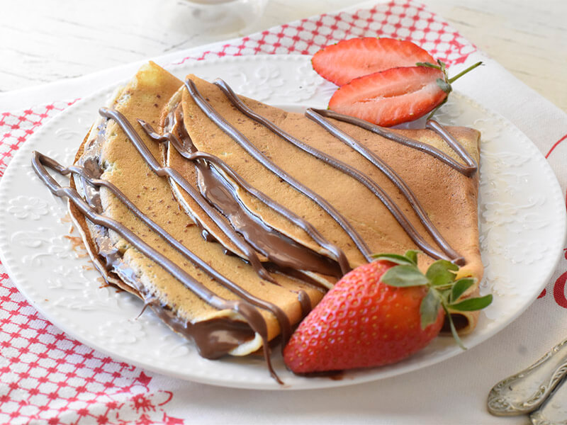

קרפ צרפתי מתכון

מצרכים
- כוס קמח
- כוס חלב
- כף שמן
- ביצה
- כפית תמצית וניל
הוראות הכנה
- מערבבים את כל המרכיבים ביחד עד לקבלת תערובת נוזלית, קצת סמיכה וללא גושים
- משמנים את המחבת ומחממים אותה לחום בינוני
- יוצקים כחצי מצקת מבלילת הקרפ (בהתאם לגודל המחבת) אל המחבת ומסובבים אותה במהירות ליצירת קרפ דק ורחב
- לאחר כחצי דקה, כששולי הקרפ מתייבשים ומתמצקים, הופכים את הקרפ בעזרת מרית ומטגנים את צדו השני
- מוציאים מהמחשבת ומניחים על צלחת
בתאבון ותודה לכולם! אשמח שתשתפו אותי איך היה ותתייגו אותי בתוצאת shanigevaa@